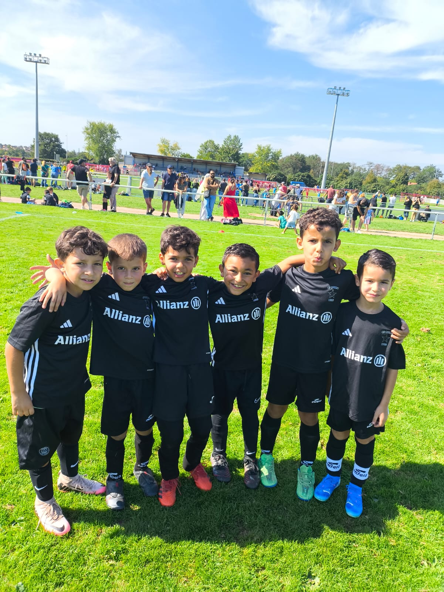

Notre Histoire & ADN
Depuis 1933, le CS ORION écrit son histoire sur les terrains. Bien plus qu'un simple club amateur, nous sommes une institution ancrée dans notre ville. Ici, la transmission, l'apprentissage et le plaisir du jeu sont les moteurs qui font battre le cœur de notre famille. Chaque joueur, chaque bénévole est un maillon essentiel de notre réussite collective.
Le mot du Président
"Rejoindre le CS ORION, c'est intégrer bien plus qu'un club de football : c'est entrer dans une famille. Depuis 1933, notre mission reste intacte : permettre à chacun, du plus petit au plus grand, de s'épanouir dans la performance, le respect et la convivialité. Ensemble, continuons à faire rayonner nos couleurs avec passion."
Terrain & Entraînements

École de Foot (U7 / U9)
Mercredi : 10h00 - 11h30
Pré-Formation (U10 à U13)
Lundi 18h / Mercredi 17h
Seniors
Mercredi & Vendredi : 19h00
Devenez Partenaire
Associez votre image à un club historique. Plus qu'un sponsoring, investissez dans un engagement local fort et vecteur de liens.
Touchez notre communauté
Véhiculez des valeurs fortes
Échangez avec nos acteurs